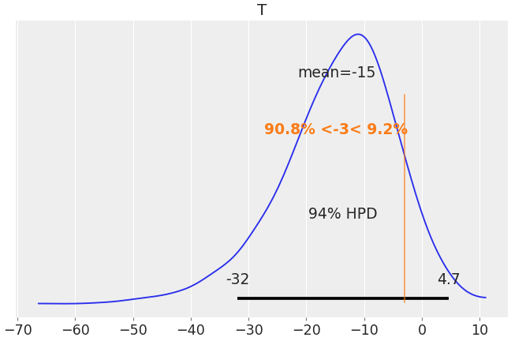

arviz.apply_test_function¶
-
arviz.apply_test_function(idata, func, group='both', var_names=None, pointwise=False, out_data_shape=None, out_pp_shape=None, out_name_data='T', out_name_pp=None, func_args=None, func_kwargs=None, ufunc_kwargs=None, wrap_data_kwargs=None, wrap_pp_kwargs=None, inplace=True, overwrite=None)[source]¶ Apply a Bayesian test function to an InferenceData object.
- Parameters
- idataInferenceData
InferenceData object on which to apply the test function. This function will add new variables to the InferenceData object to store the result without modifying the existing ones.
- funccallable
Callable that calculates the test function. It must have the following call signature
func(y, theta, *args, **kwargs)(whereyis the observed data or posterior predictive andthetathe model parameters) even if not all the arguments are used.- groupstr, optional
Group on which to apply the test function. Can be observed_data, posterior_predictive or both.
- var_namesdict group -> var_names, optional
Mapping from group name to the variables to be passed to func. It can be a dict of strings or lists of strings. There is also the option of using
bothas key, in which case, the same variables are used in observed data and posterior predictive groups- pointwisebool, optional
If True, apply the test function to each observation and sample, otherwise, apply test function to each sample.
- out_data_shape, out_pp_shapetuple, optional
Output shape of the test function applied to the observed/posterior predictive data. If None, the default depends on the value of pointwise.
- out_name_data, out_name_ppstr, optional
Name of the variables to add to the observed_data and posterior_predictive datasets respectively.
out_name_ppcan beNone, in which case will be taken equal toout_name_data.- func_argssequence, optional
Passed as is to
func- func_kwargsmapping, optional
Passed as is to
func- wrap_data_kwargs, wrap_pp_kwargsmapping, optional
kwargs passed to
az.stats.wrap_xarray_ufunc. By default, some suitable input_core_dims are used.- inplacebool, optional
If True, add the variables inplace, othewise, return a copy of idata with the variables added.
- overwritebool, optional
Overwrite data in case
out_name_dataorout_name_ppare already variables in dataset. IfNoneit will be the opposite of inplace.
- Returns
- idataInferenceData
Output InferenceData object. If
inplace=True, it is the same input object modified inplace.
Notes
This function is provided for convenience to wrap scalar or functions working on low dims to inference data object. It is not optimized to be faster nor as fast as vectorized computations.
Examples
Use
apply_test_functionto wrapnp.minfor illustration purposes. And plot the results.>>> import arviz as az >>> idata = az.load_arviz_data("centered_eight") >>> az.apply_test_function(idata, lambda y, theta: np.min(y)) >>> T = np.asscalar(idata.observed_data.T) >>> az.plot_posterior(idata, var_names=["T"], group="posterior_predictive", ref_val=T)
